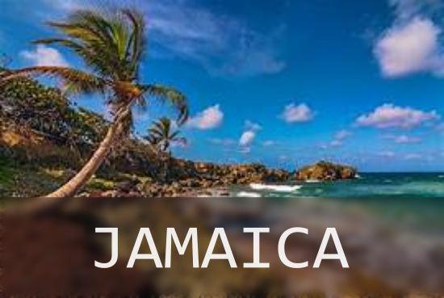
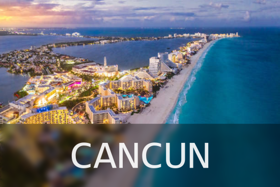
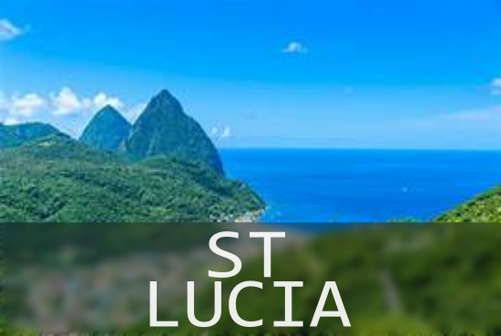
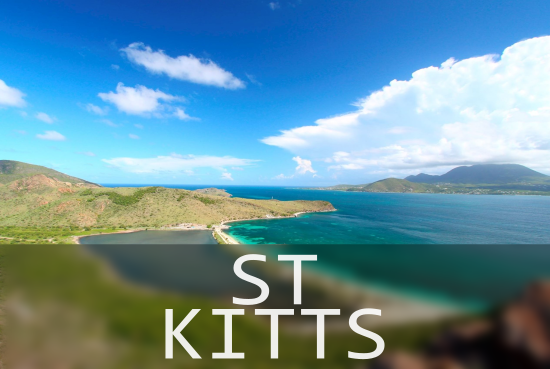

Dune River Falls
Take a hike up one of Jamaica's most beautiful waterfalls
Bamboo Rafting
Take a guided trip down one of Jamaica's rivers, and learn about the plantation and the history of Jamaica
Jamaica Bobsled Tour
Take a ride through the Jamaican rainforet in a bobsled that you can control the speed

ATV Jungle Adventure with Ziplines
Drive a ATV through the Maya jungle while also stopping to zipline through the trees
Jungle Tour Adventure
Enjoy a guided speed boat tour to a beutiful snokerling location
Mayan Ruins tour
Take a tour of the Mayan ruins while learning about the regians history, and then enjoy some swimming at a swimming hole

St Lucia Food and Rum tour
Take a tour through St Lucia, and enjoy some local foods and rum on the way
St Lucia Aerial Tram Tour
Take a tram ride upthrough the St Lucia rainforest and experience views like never before
SeaTrek St Lucia Tour
Take a trip out into the water and experience the ocean like never before

St Kitts Zipline experience
Take a zipline trip through the jungles of St Kitts, where you will get to experiece 5 lines ranging up to 250 feet
St Kitts Nevis Island Tour
Enjoy a relaxing boat ride and enjoy the history of the island, along with a beach stop and lunch
Cockleshell Beach
Enjoy a relaxing day at Cockleshell beeach